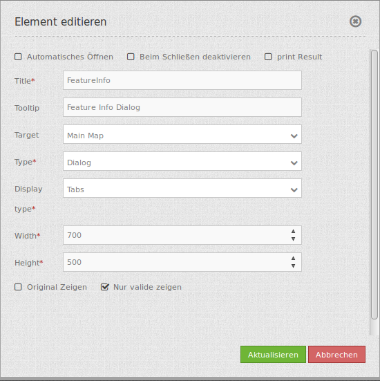
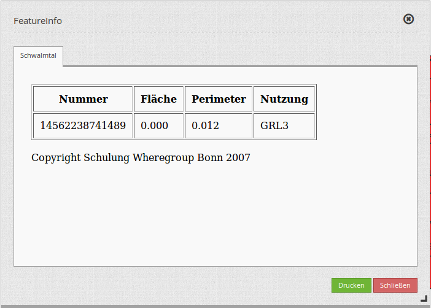
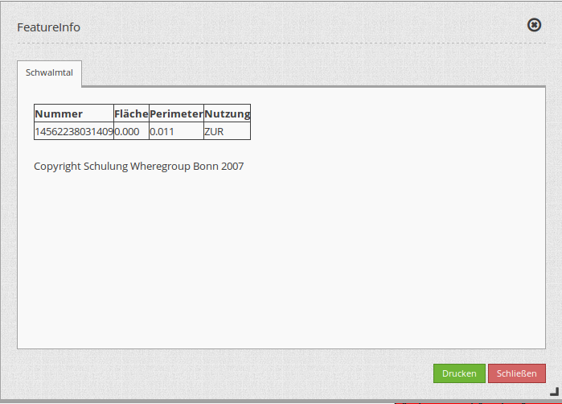
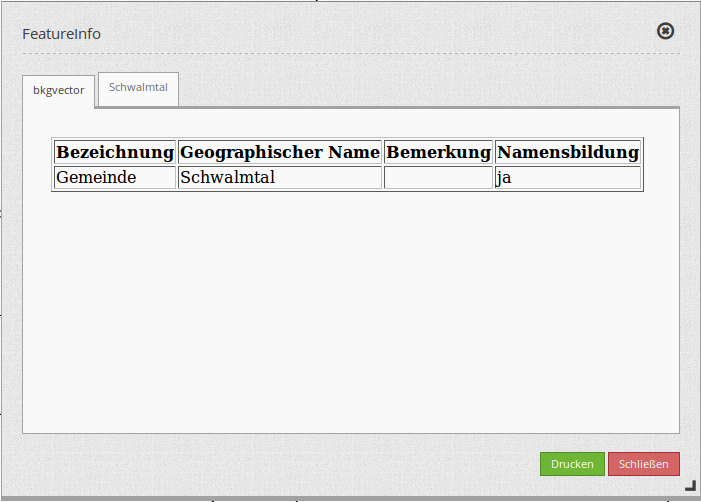

Feature Info (Information)¶
Dieses Element stellt die Infoabfrage bereit, die mit WMS Services funktioniert.

Konfiguration¶
{kind=link}
- Automatisches Öffnen (Autoopen): Schaltet ein/aus, ob das Informationsfenster beim Start der Anwendung automatisch geöffnet werden soll (Standard: Ausgeschaltet).
- Print Result: Anzeige eines Links, über den die Infoabfrage ausgedruckt werden kann. Standardwert ist false.
- Beim Schließen deaktivieren: false, um die Funktion nach dem Schließen des Ergebnisfensters zu deaktivieren, der Standardwert ist true.
- Title: Titel des Elements. Dieser wird in der Layouts Liste angezeigt und ermöglicht, mehrere Button-Elemente voneinander zu unterscheiden. Der Titel wird außerdem neben dem Button angezeigt, wenn “Beschriftung anzeigen” aktiviert ist.
- Tooltip: Text, der angezeigt wird, wenn der Mauszeiger eine längere Zeit über dem Element verweilt.
- Target: ID des Kartenelements, auf das sich das Element bezieht.
- Type: Auwahl, ob die Info als Element oder Dialog angezeigt werden soll. Default und mandatory: Dialog.
- Display: Anzeige der Information als Tabs oder in Accordionform.
- Width/ Height: Größe des Dialogfeldes (Breite und Höhe in Pixel)
- Original Zeigen: Original css-Stil des Ergebnisses wird angezeigt. Standardwert ist false.
- nur valide zeigen: Parameter hängt sehr vom Format des GetFeatureInfo Responses ab. Beispiel UMN: Solange ein Template korrekte HTML Head und Body Elemente definiert (z.B. über die Angabe einer Headers und Footers Datei), interpretiert Mapbender3 das Resultat als valide. Fehlen diese Head und Body Angaben, so gilt dies für Mapbender3 als nicht valide.
- Bitte stellen Sie sicher, dass die GetFeatureInfo Antworten valides HTML zurückgeben.
- Wenn sie
text/planals Ausgabeformat definieren, darf der Schalteronly validnicht aktiviert sein, datext/plainkein valides HTML zurückgibt.
Hinweis: Über die Informationsabfrage des FeatureInfo Dialogs können der Anwendung dynamisch WMS Dienste hinzugefügt werden. Hierfür wird der WMS Loader genutzt. Für nähere Informationen siehe das Kapitel Hinzufügen eines WMS über einen definierten Link.
Anzeige als Original und gestyled¶
Mit der Option “Original zeigen” wird die Original-Darstellung des FeatureInfo Responses genutzt. Ist die Option deaktiviert, wird versucht eine einheitliche Darstellung in Mapbender zu erreichen.
Beispiel Original:
{kind=link}
Beispiel gestyled:
{kind=link}
Anzeige als Tabs und Accordion¶
Mit dem Schalter “Type” können die Responses mehrerer Dienste in unterschiedlichen Tabs oder als Accordion angezeigt werden.
Beispiel Tabs:
{kind=link}
Beispiel Accordion:

Ausdruck der Resultate¶
Mit dem Schalter “print Result” kann die Information des FeatureInfo ausgedruckt werden. Eine Druck Schaltfläche ist dann in dem Feature-Dialog sichtbar. Das Drucken geschieht über den Druckdialog des Webbrowsers.
Um alle Bilder und Hintergrundfarben des im Ausdruck zu erhalten, sollten Sie die Druckeinstellungen des Webbrowsers beachten: Im Firefox kann man die Option “Hintergrund drucken” im Druckoptionendialog anschalten, in Chrome basierten Browsern nennt sich die Option “Hintergrundgrafiken”. Die übermittelten Schriften können bei einem Ausdruck in PDF je nach Viewer unterschiedlich gut funktionieren. Desweiteren modifizieren die meisten Browser Webseiten etwas vor dem Druck, damit nicht so viel Tinte/Toner verbraucht wird.
Button-Konfiguration¶
Für das Element wird ein Button verwendet. Siehe das Kapitel Button für die generelle Konfiguration. Der folgende Screenshot zeigt ein Beispiel für einen FeatureInfo Button, der so lange aktiviert ist, bis er vom Benutzer wieder deaktiviert wird. Eine weitere Möglichkeit, ihn zu deaktivieren wäre den FeatureInfo Dialog zu schließen, wenn dieser die Option die Option “Deactivate on Close” angeschaltet hat.
- Group: featureinfo
- Deactivate: deactivate
{kind=link}
YAML-Definition:¶
title: FeaureInfo # Titel des Elements
tooltip: Feature Info # Text des Tooltips
type: dialog # Default und mandatory: dialog.
target: map # ID des Kartenelements
autoActivate: false # true, wenn die Infoabfrage beim Start der Anwendung geöffnet wird, der Standardwert ist false.
deactivateOnClose: true # true/false um die Funktion nach dem Schließen des Ergebnisfensters zu deaktivieren, der Standardwert ist true
onlyValid: false # Korrekte HTML Ausgabe erfordern. Standardwert ist false.
printResult: false # Anzeige eines Links, über den die Infoabfrage ausgedruckt werden kann. Standardwert ist false.
showOriginal: false # Der Original css-Stil des Ergebnisses wird angezeigt. Standardwert ist false.
displayType: tabs # tabs/accordion Default: tabs
width: 700 # Breite des Dialogs in Pixel, Standardwert: 700
height: 500 # Höhe des Dialog in Pixel, Standardwert: 500
Class, Widget & Style¶
- Class: Mapbender\CoreBundle\Element\FeatureInfo
- Widget: mapbender.element.featureInfo.js
- Style: mapbender.elements.css
HTTP Callbacks¶
Keine.
JavaScript API¶
activate¶
Aktiviert das Modul, welches dann auf einen Mausklick wartet, um die Infoabfrage zu öffnen.
deactivate¶
Deaktiviert das Modul.
JavaScript Signals¶
Keine.